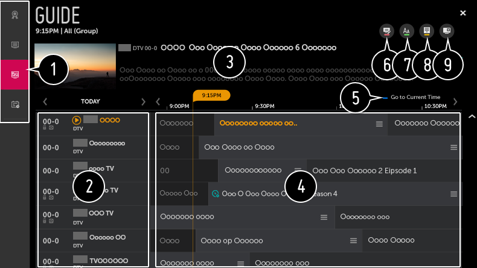

Visualización de TV Guide
Puede ver cada uno de los programas y su programación.
Pulse el botón del mando a distancia y seleccione la pestaña Guía de TV de la parte izquierda de la pantalla.
Pulse el botón del mando a distancia y seleccione la pestaña Guía de TV de la parte izquierda de la pantalla.

- Haga clic en cada zona para pasar a la aplicación.
- Puede ver información sobre el canal y la emisora.
- Puede obtener información sobre el programa que está viendo en ese momento, así como información del programa específico.
- Seleccione el botón o el título del programa que desee. Puede ver más información sobre el programa y efectuar VER / GRABAR (disponibles únicamente en ciertos modelos) o RECORDATORIO / GRABACIÓN PROGRAMADA (solo disponibles en algunos modelos), etc.
- Se le dirigirá a la lista de programas para la fecha y la hora actuales.
- Inicie Administrador de canales.
- Puede cambiar el tamaño de la lista de programas para ajustar el número de canales que aparecen en pantalla.
- Permite definir el filtro.
- Puede encender / apagar la Mini TV.
No se muestra la información de programa de los canales que no cuenten con información de emisión.
Esta función solo está disponible en algunos modelos.
Los elementos configurables varían según el modelo.